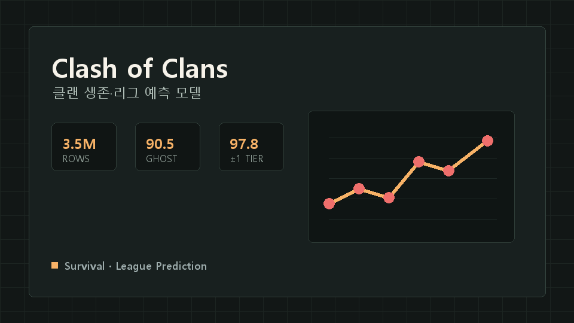

API 데이터 파이프라인
공식 API와 공개 데이터를 수집하고 분석 단위에 맞게 재구성
Work Signals
공식 API와 공개 데이터를 수집하고 분석 단위에 맞게 재구성
분포, 관계, 성과 기준을 검증하고 예측 모델로 해석 보강
분석 결과를 PDF에 멈추지 않고 실제 탐색 도구로 구현
Selected Projects

Game Data · Meta Analytics
상위권 스쿼드의 Top3 성과를 역할 조합, 듀오 시너지, 패치 흐름으로 분석한 웹 대시보드

Game Data · Prediction Model
클랜 생존 가능성과 리그 성장 잠재력을 예측해 신규 유저와 클랜장의 의사결정을 돕는 모델링 프로젝트

Operating Pattern
API와 공개 데이터를 수집하고, 재현 가능한 설정과 수집 기준을 남김
원천 row를 분석 질문에 맞는 mart, signature, 집계 단위로 변환
EDA 결과를 모델링으로 검증하고 누수, 표본, 기준선 문제를 점검
결과를 대시보드, 서비스, 보고서로 연결해 실제 사용 가능한 산출물로 배포
Next
각 프로젝트는 개별 GitHub README로 상세 설명을 제공하고, 이 사이트는 전체 역량과 대표 산출물을 빠르게 훑는 첫 관문으로 사용